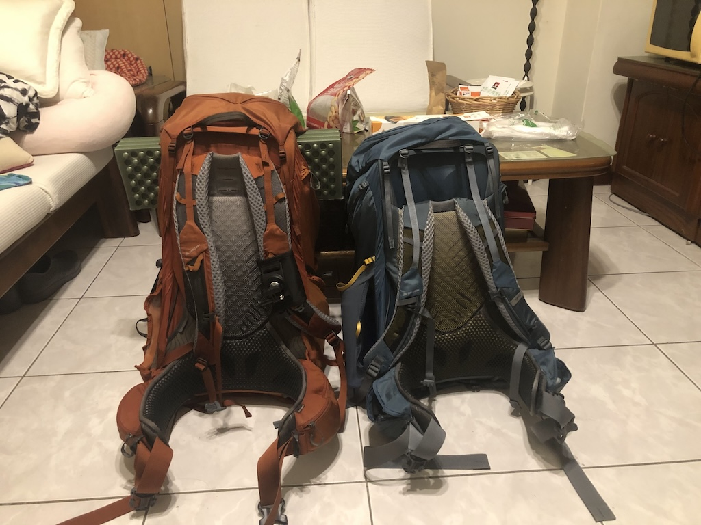
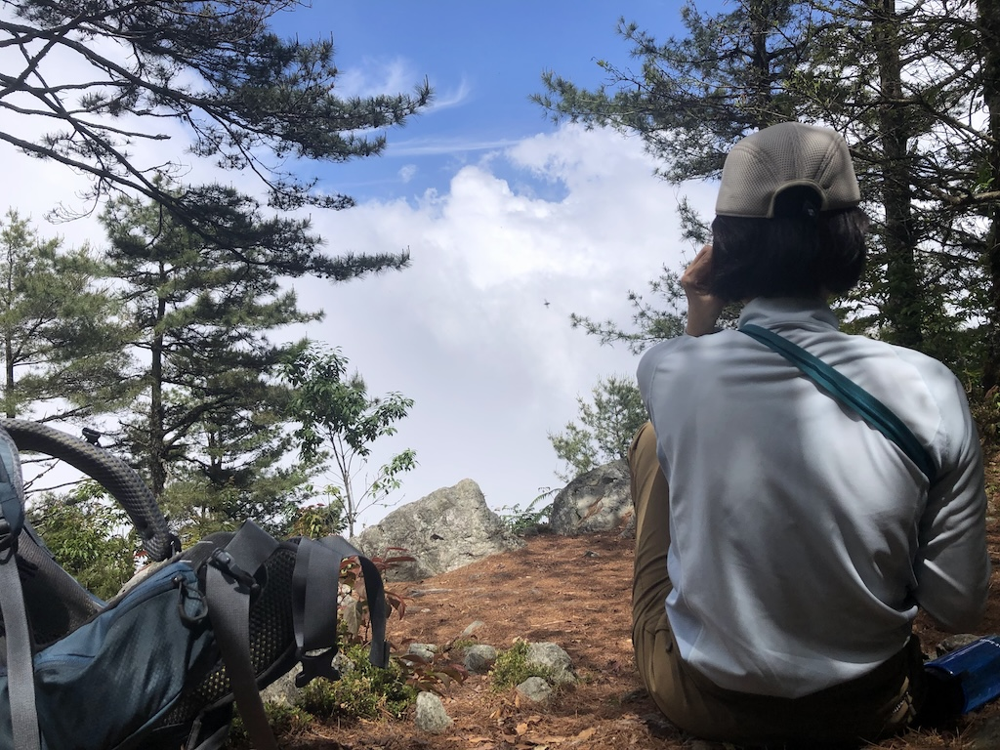
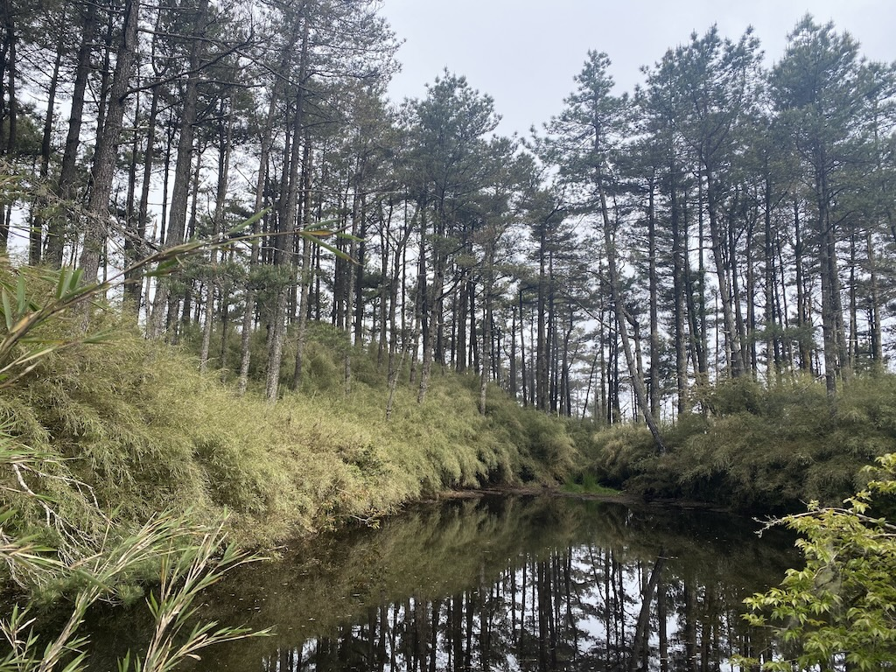
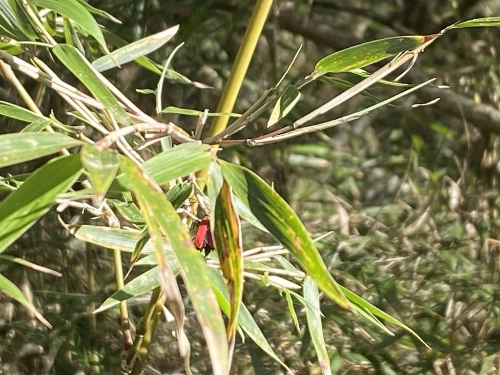
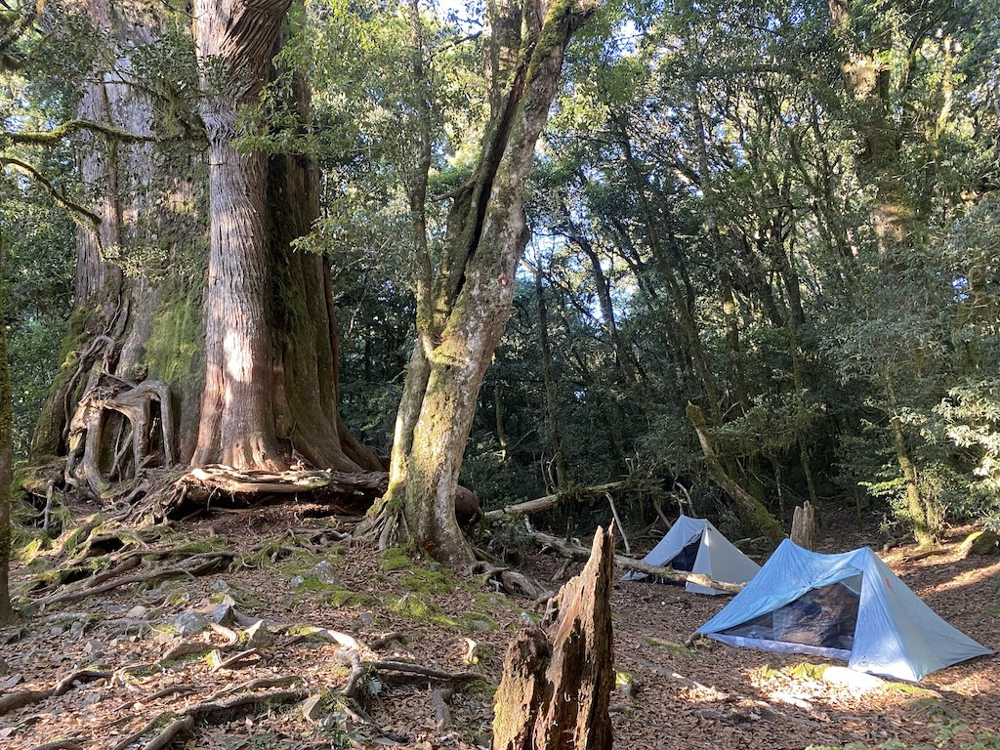
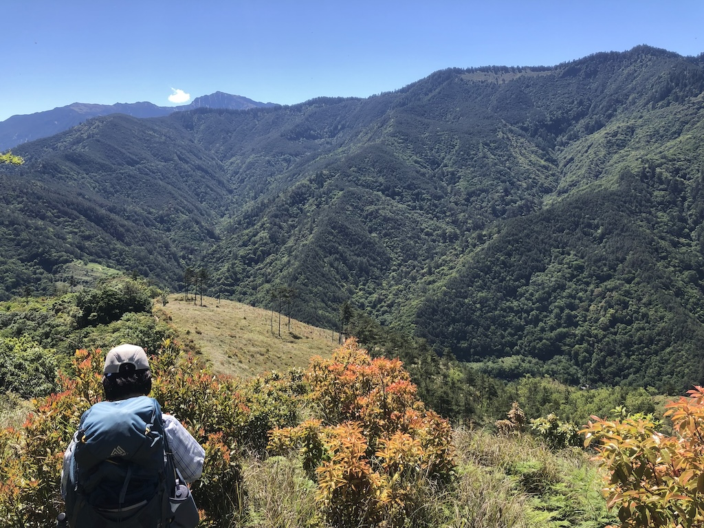
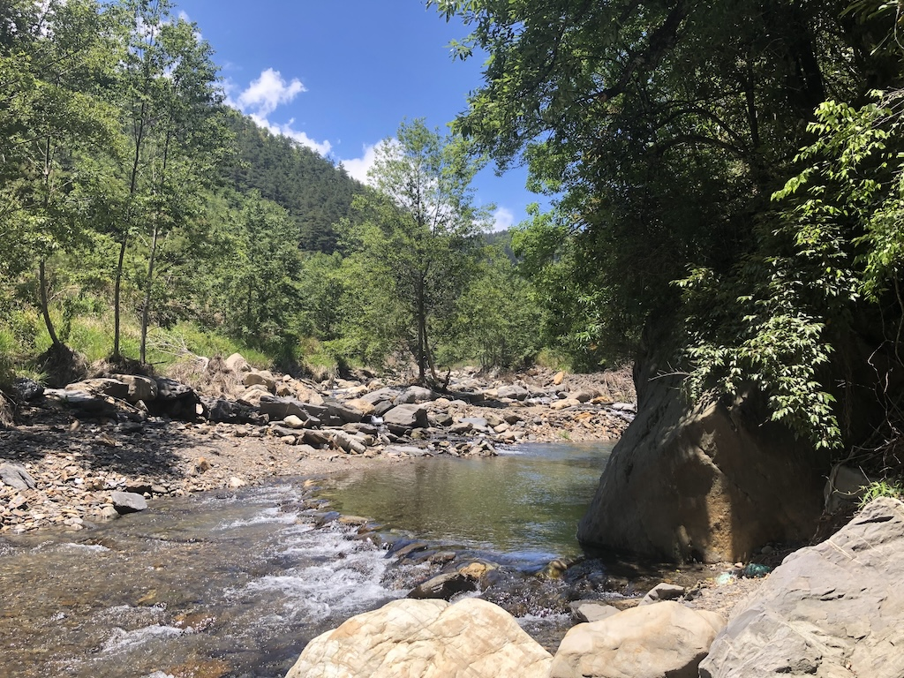
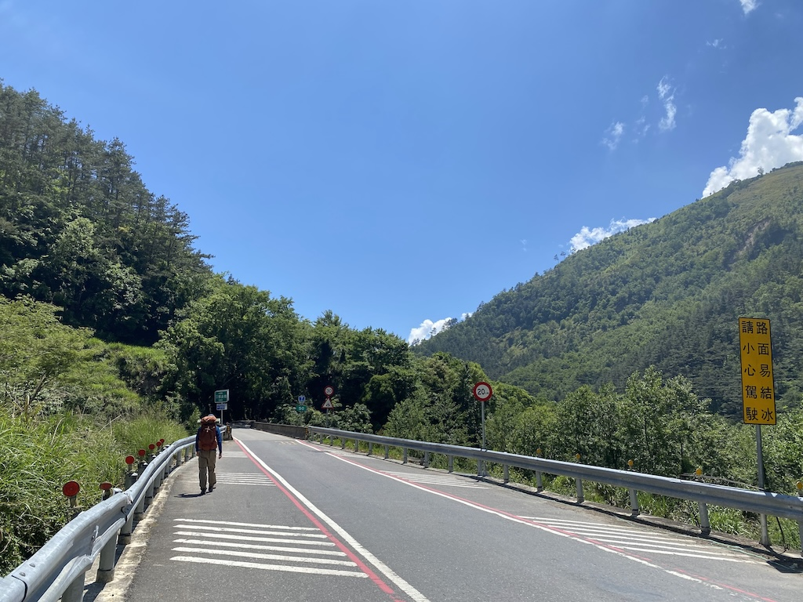

三訪羅馬神木
-
內湖
2025-05-14晚上先打包好，預計隔天下班回家後先到宜蘭過夜，然後搭星期五一早的客運到登山口。
-
D0
2025-05-15 橘色背包含水預計十二公斤，藍色背包預計六公斤。 下班後回家拿背包，然後到南港轉運站晚餐，我吃了安全牌麥當勞，妮娜吃了紅豆食府的便當。邊吃飯邊納悶「為什麼時間到了車還沒來？」後來才想起車是九點才從圓山轉運站出發的。搭客運到宜蘭轉運站後，按計劃到全聯買水，共買了五瓶瓶裝水（ 1.5L x 4 + 0.6L x 1 ），加上 0.75L 的水瓶共 7.35L ，預計可以用到大甲溪邊。接著到山啄木稍微清理後就寢，這次還是住三樓同一間雙人房，沒遇到任何人。
-
D1
2025-05-16 -
宜蘭轉運站
07:30離開山啄木後，在樓下的傳統早餐店買早餐。我買了燒餅油條加豆漿，妮娜買了蛋餅加奶茶，剛好一百元，不需要帶零錢上山。路上經過其他店時，妮娜原本打算買飯糰，不過因為不想帶零錢上山所以作罷。最後在轉運站的全家買了個御飯糰，我們也在轉運站內吃完早餐。今天搭車的人比前幾次少。
-
思源派出所
10:30在登山口休整時，我另外從溪中補了近一公升半的水，出發時共有 8.1 公升的水加一瓶未開的咖啡。我們也在這裡開始用運動相機記錄行程。出發後一過溪就開始鑽芒草，然後走到新路上。新路有點像叢穿，沒有布條，但是人跡明顯，路上偶有遺留物（毛巾跟水壺？），路又陡又鬆，不知道是不是原路不通才多出一條路。我走起來雖沒什麼問題，不過妮娜先是在坡上卡了一下，導致水瓶滑出背包側袋，只好往下回去撿掉落的水瓶，接著又在坡上滑倒趴在地上動彈不得，所幸沒有受傷。在樹林中的陡坡轉了幾個彎後終於回到正常的路線上。
-
唯一的開闊處
13:30 爬升四百公尺後來到一塊小空地，這也是到馬武佐野郡山之前唯一的開闊處，可惜今天白牆。 -
羅葉尾池
15:40 抵達羅葉尾池，這次往內又走了一段。不過老實說…沒什麼特別之處🤣。 -
羅葉尾山
15:50抵達羅葉尾山三角點，妮娜一直以為這是今晚的營地🤔。離開三角點後一路陡下，路上看到「長角窄胸紅螢」，不過這時還不知牠是何方神聖，只覺得長得像鹿角的觸角很酷。走到六點時妮娜速度大減，雖然離神木已經很近，但大減的速度讓我們花了更多時間才到。六點半時我終於決定打開頭燈，並開始頻繁查看離線地圖。妮娜事後表示那個當下懷疑起我們是不是迷路了。實際上雖然有些看不太清楚路徑與布條，我們還是沒有走偏。只是速度大減後，最後五百公尺就是走不完🤣。
 長角窄胸紅螢 -
羅馬神木
19:00抵達羅馬神木，稍微檢視一下營地後，決定讓兩頂雙人帳相隔四公尺左右，並跟妮娜討論進出的動線。紮完營後煮水讓妮娜泡飯泡湯，我則是第一次嚐試不開火晚餐。吃完飯後就準備就寢了。午夜前閃電不斷，但是沒有雷聲（據說是雲間的閃電），一夜無雨。
-
D2
2025-05-17 -
羅馬神木
06:00 Durston X-Mid 1 & X-Mid Pro 1 by 羅馬神木. 起床早餐打包。打包完後搭好相機開始縮時攝影收帳篷的過程，然後又玩了一下相機遙控器，跟神木合照。有鑑於第一次來時只花三個小時就下到大甲溪邊發呆，特別跟妮娜說我們可以慢慢晃下山。
-
馬武佐野郡山
08:45晃到馬武佐野郡山三角點後開始看風景，妮娜心情大好。一路邊走邊拍，雖然後來氣溫升高，但路邊偶爾還是有小樹可以遮陽休息。妮娜在三角點處注意到小鶯的可愛叫聲，有些像在模仿轟炸機，妮娜替牠們接上我們對鎌倉的印象：「嗯⤴⤴⤴⤴⤴ build~~build-build~」。
 我要去南湖大山！ -
大甲溪
11:50抵達大甲溪，水深及膝，不過往上游處有一段石頭排成的小壩，溪水流速較緩，赤腳過溪即可。溪邊水流較緩處有很多蝌蚪。在溪邊泡腳進食放空到一點左右才走到勝光派出所等車，不過因為還要等一小時，所以又到南湖登山口的方便屋去晃了一圈。然後就在勝光派出所外預約登記結婚事宜❤️。
 大甲溪中的小壩  南湖圈谷太遠太累，南湖登山口倒是沒什麼問題，剛好打發等公車的時間。 -
南山村
??:??在南山村買了兩個肉包、一個銀絲捲、一個蔥捲，每個二十元。一方面想墊個肚子，一方面感謝一下提供廁所的店家。不過因為前一段司機車開得較快，左搖右晃後實在有些不舒服，所以妮娜沒吃就繼續睡了。
-
雨後的內湖
??:??這次一路上天氣都很好。直到回到內湖都沒有碰到雨，倒是內湖才剛下完雨的樣子，幸運！🍀